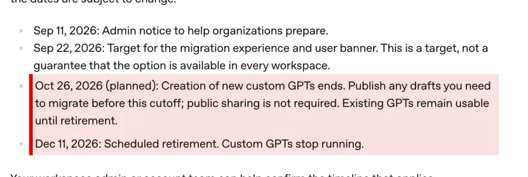
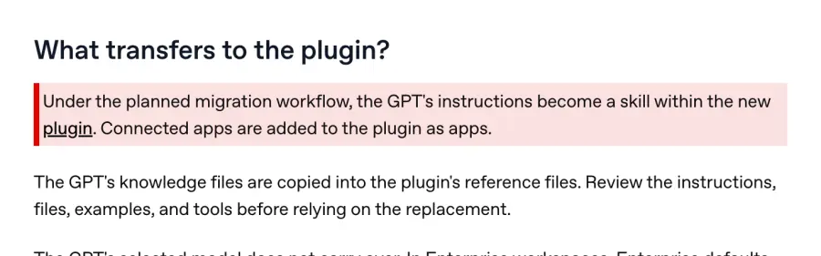

Сохраните инструкции GPTs за пять минут
Ваши GPT-шки пакуют чемоданы Заберите одну вещь, пока не поздно. Пять минут. Ребята, я сама собирала GPT-шки. Много. И до сих пор мне в личку пишут: «Ира, собери мне такого же помощника». Потому что удобно: открыл, а он уже знает, как тебе нравится. Кто работает в Кодексе или в Клоде, давно живёт в проектах и скиллах. Но почти все, кого я знаю, остались в GPT-шках. Настроили один раз (или им настроили) и спокойно пользуются. Так вот. Они заканчиваются. Вот как это выглядит в официальной справке OpenAI:
Для корпоративных аккаунтов сроки уже расписаны: с 25 сентября новые GPT не создать, 11 декабря старые перестают работать. А на личных тарифах, Plus и Pro, новые GPT создавать уже нельзя совсем. Старые пока работают. Когда именно они выключатся у вас, придёт уведомление внутри ChatGPT. Как всё переедет, до конца не понимают даже те, кто переезжает первым. Что переедет само, а что нет:Инструкции опубликованного GPT станут скиллом внутри плагина. Подключённые приложения тоже переедут. Черновики не переезжают вообще. Подключения к внешним сервисам придётся собирать заново. После переезда старый GPT станет «только для чтения».И вот тут я бы не ждала, пока всё переедет само. Самое ценное в вашем GPT не аватарка и не название, а поле «Инструкции». Смотрите, куда OpenAI сами советуют смотреть в первую очередь:

Инструкции, материалы и пару привычных запросов OpenAI советуют записать заранее. Это и есть ваша работа, всё остальное интерфейс. Вы это собирали неделями. Или вам собирали, и тогда вы, скорее всего, даже не читали, что там написано. Это вариант хуже: потеряете и не заметите, что потеряли. Что сделать сегодня, минут пять: 1. Откройте свой GPT и зайдите в редактирование, во вкладку настроек. 2. Скопируйте текст из поля «Инструкции» целиком и сохраните обычным документом. Именно из настроек. Не просите GPT пересказать свои инструкции в чате: он перескажет, как сотрудник по памяти пересказывает должностную инструкцию. Пункт про отчётность выпадет первым. 3. Рядом сохраните файлы, которые загружали в «Знания». 4. Если у помощника были подключения к другим сервисам, выпишите, куда он ходил. 5. Если GPT висит в черновиках, опубликуйте его. Публиковать можно только для себя, открывать всему интернету не нужно. Если передумаете: ничего не сломается. Копия инструкции просто лежит у вас в документах, GPT продолжает работать как работал. Этот документ потом вставляется куда угодно: в плагин, в проект Клода, в новый сервис, который выйдет через полгода. Инструкция переезжает. Кнопка остаётся в старой квартире. Я свои тоже сейчас переношу. Страшно только первые пять минут. Источник: справка OpenAI «Custom GPT retirement and migration FAQ» (обновлена 12.09.2026), help.openai.com. Скриншоты сняты 23.09.2026.